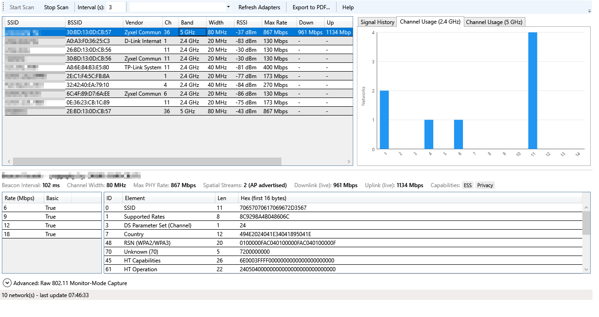
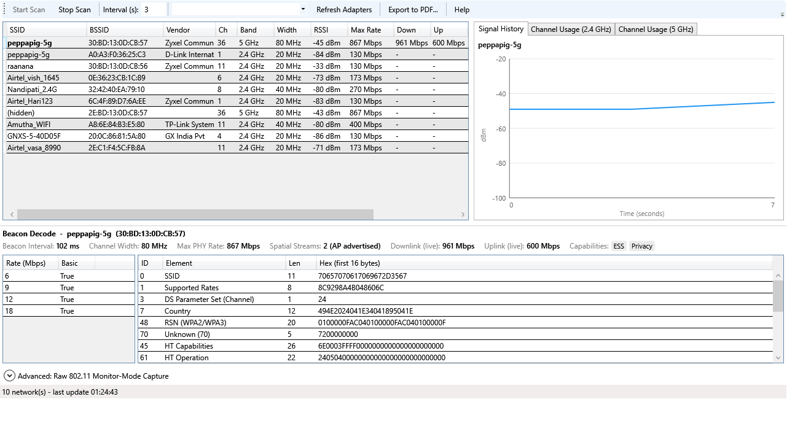

Why the channel matters
Wi-Fi networks take turns to talk. Every network on the same or an overlapping channel competes for the same airtime, so when several neighbours share your channel, everyone waits longer. You see that as slow speeds, lag in video calls and random drops, even though the signal looks strong.
Moving to a less crowded channel is free, takes a few minutes, and is often the quickest fix for a busy apartment block or office.
2.4 GHz vs 5 GHz in one minute
| 2.4 GHz | 5 GHz | |
|---|---|---|
| Range | Longer, better through walls | Shorter |
| Speed | Lower | Much higher |
| Channels to use | Only 1, 6 or 11 | Many non-overlapping channels |
| Crowding | Usually very crowded | Usually much quieter |
On 2.4 GHz, channels overlap their neighbours. Channel 3, for example, overlaps both 1 and 6 and interferes with both. That's why the standard advice is to use only 1, 6 or 11, which don't overlap each other.
If your devices support it, use 5 GHz wherever the signal reaches. It has far more room.
Step 1: See which channels nearby networks use
Option A: Windows' built-in command
Open Terminal or Command Prompt and run:
netsh wlan show networks mode=bssid
For each network nearby, Windows lists the Channel, the Signal as a percentage, and the band. Note which channels come up most often and which networks have a strong signal. A strong neighbour on your channel hurts more than a weak one.
To see which channel you are on right now, run netsh wlan show interfaces and look for the Channel line.
This works without installing anything, but it's a one-off text snapshot, and Windows may only show networks found in its most recent scan.
Option B: A Wi-Fi scanner with channel charts
A Wi-Fi scanner makes the picture obvious. llemonai WiFi Scanner is free and runs on Windows 10/11 without installing. It shows every nearby network with its channel, band, width and signal strength (RSSI), and draws 2.4 GHz and 5 GHz channel usage charts, so you can see at a glance where networks pile up and overlap.

Networks are colour-coded by signal and interference, and the signal history graph lets you watch whether a change actually helped.

Step 2: Pick the best channel
On 2.4 GHz
- Look only at channels 1, 6 and 11.
- For each one, count the networks using it or overlapping it, and give strong ones more weight.
- Choose the one with the fewest and weakest neighbours.
- Keep the channel width at 20 MHz. Wider 40 MHz channels on 2.4 GHz overlap most of the band and usually make things worse in busy areas.
On 5 GHz
- Pick a channel that no strong nearby network is using.
- Remember that wider channels (80 MHz) cover several channel numbers at once. Make sure the whole block is quiet, not just the main channel.
- Channels 52–144 (called DFS channels) are often the emptiest. Your router may briefly move off them if it detects radar nearby, and some older devices can't use them.
- If the 5 GHz band is crowded where you are, narrowing the width from 80 to 40 MHz trades a little top speed for much more reliability.
Step 3: Change the channel on your router
- Open your router's settings page in a browser. It's usually
192.168.0.1or192.168.1.1, and the address is often printed on a sticker on the router. You can also runipconfigand use the Default Gateway address. - Sign in with the admin password, which is often on the same sticker if you never changed it.
- Find Wireless or Wi-Fi settings. Each band (2.4 GHz and 5 GHz) usually has its own Channel and Channel width setting.
- Change from Auto to the channel you chose, then save. The Wi-Fi will drop for a few seconds while the router switches.
Tip: "Auto" is fine on many modern routers, but some only choose a channel at startup and never revisit it. If Auto keeps landing on a busy channel, set one yourself.
Step 4: Check that it helped
Scan again and compare your signal and the number of neighbours on your new channel. Then run a speed test at the spot where Wi-Fi was worst. llemonai WiFi Scanner has a built-in M-Lab speed test, so you can scan and test in one place.
If the channel is quiet but things are still slow, the problem is probably elsewhere. The usual suspects are distance and walls between you and the router, too many devices connected, or a slow internet connection. A strong Wi-Fi signal can't make a slow broadband line faster.
Quick reference: what the signal numbers mean
| Signal (RSSI) | What to expect |
|---|---|
| −30 to −55 dBm | Excellent |
| −56 to −67 dBm | Good: reliable for video calls and streaming |
| −68 to −75 dBm | Fair: browsing is fine, calls may stutter |
| Below −75 dBm | Poor: expect slow speeds and drops |
Try it free: llemonai WiFi Scanner
Free for Windows 10/11 and Android. A single portable .exe with no installer and no admin rights, so it runs from a USB stick. It includes channel charts, signal history, a speed test and a PDF report you can share.
Download WiFi Scanner